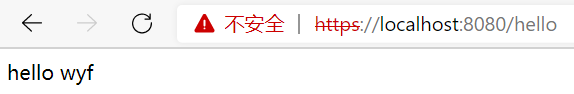
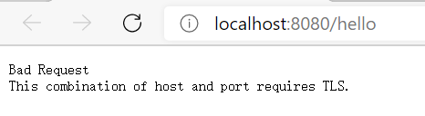

由于HTTPS具有良好的安全性，在开发中得到了越来越广泛的应用，对于个人开发者而言，一个HTTPS证书的价格还是有点贵的，国内有一些云服务器厂商提供免费的HTTPS证书，一个账号可以申请数个。不过在jdk中提供了一个Java数字证书管理工具类keytool，在\jdk\bin目录下，通过这个工具可以自己生成一个数字证书。
HTTP配置
1 | keytool -genkey -alias tomcathttps -keyalg RSA -keysize 2048 -keystore sang.p12 -validity 365 |
命令解释：
- -genkey表示要创建一个新的密钥
- -alias表示keystore的别名
- -keyalg比哦是使用的加密算法是RSA，一种非对称加密算法
- -keysize表示密钥的长度
- -keystore表示生成的密钥存放位置
- -validity表示密钥的有效时间，单位为天
在cmd窗口中直接执行如上命令，在执行过程中需要输入密钥口令等信息，根据提示输入即可。命令执行完后，会在当前用户目录下生成一个名为sang.p12的文件，将这个文件复制到项目的根目录下，然后在application.properties中做如下配置：
1 | serve.ssl.key-store=sang.p12 |
代码解释：
key-store表示密钥文件名
key-alias表示密钥别名
key-store-password就是在cmd中输入的密码
配置成功后，启动项目，在地址栏输入如下命令来查看效果。
1
https://localhost:8080/hello
注意，证书是自己生成的，不被浏览器认可，此时添加信任或继续前进即可，如图：


成功运行的结果如图：

此时，如果以HTTP方式访问接口，会出现如下情况：

这是因为SpringBoot不支持同时在配置中启动HTTP和HTTPS，这个时候可以配置请求重定向，将HTTP请求重定向为HTTPS请求。配置方式如下：
1 | @Configuration(proxyBeanMethods = true) |
配置完成后，在浏览器中输入
1 | http://localhost:8080/hello |
会自动重定向到
1 | https://localhost:8081/hello |